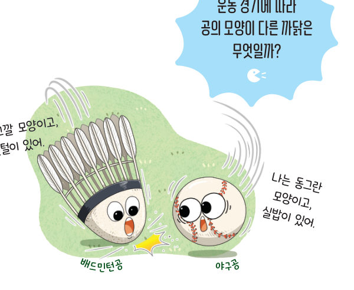
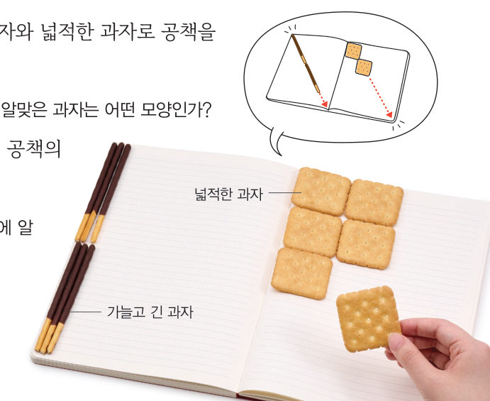
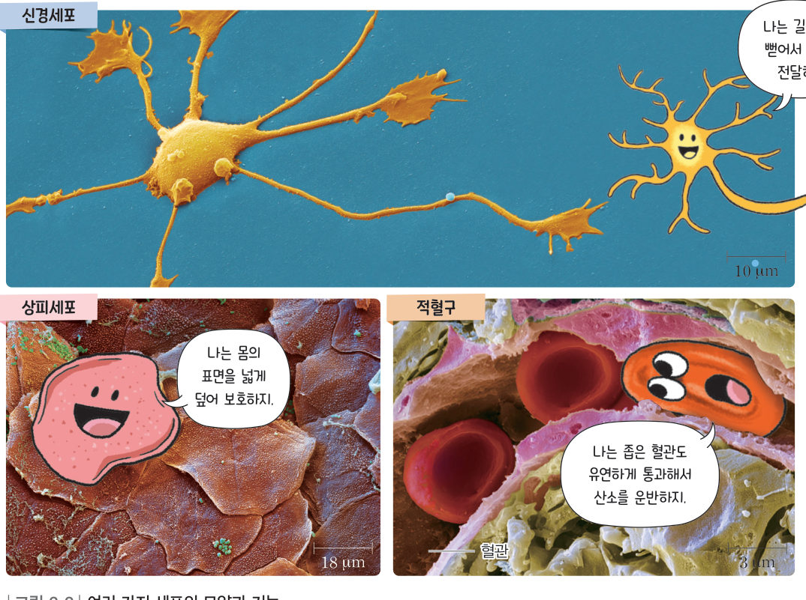

살아있는 교과서 · Ⅱ. 생물의 구성과 다양성 · 1. 생물의 구성 · 02 46~47쪽
종류에 따라 다양한
종류에 따라 다양한
세포의 특징
“나는 고깔 모양이고, 깃털이 있어.” “나는 동그란 모양이고, 실밥이 있어.” 운동 경기에 따라 공의 모양이 다른 까닭은 무엇일까? 과자 모형과 가상 혈관으로 세포의 모양과 기능이 어떤 관계인지 알아보자.
🎯 이 단원을 배우면 — 세포의 종류에 따라 특징이 다른 까닭을 추론하여 설명할 수 있다.
해 보기세포의 모양이 다양한 까닭 알아보기 46쪽
세포의 종류에 따라 모양과 기능은 어떻게 다를까?
우리가 주변에서 흔히 보는 생물은 대부분 수많은 세포로 이루어져 있다. 또한 세포의 종류도 다양하고, 세포마다 모양과 기능 같은 특징이 다르다.

가상 실험과자로 공책 덮기 · 꼭짓점 잇기
과제와 과자를 고르고 [과자 놓기]를 누르면 과자가 하나씩 놓여요. 과제를 끝내는 데 필요한 과자 수를 비교해 보자.
1적은 개수로 공책을 덮기에 알맞은 과자는 이고, 적은 개수로 꼭짓점을 잇기에 알맞은 과자는 이다.
💬과자를 세포에 비유할 때 세포의 모양과 기능이 어떤 관계가 있는지 이야기해 보자.
교과서여러 가지 세포의 모양과 기능 47쪽
생물을 이루는 세포 중 신경세포, 상피세포, 적혈구는 그림 2-2와 같이 서로 특징이 다르다. 신경세포는 몸 곳곳에 퍼져 있는 ●신경을 이루는 세포이다. 나뭇가지처럼 사방으로 길게 뻗은 모양으로, 여러 방향에서 신호를 받아들이고, 한곳에서 다른 곳으로 신호를 빠르게 전달하는 데 알맞다. 상피세포는 몸 표면이나 몸속 기관의 안쪽 표면을 덮고 있는 상피조직을 구성하는 세포이다. 피부를 구성하는 상피세포는 넓고 얇게 퍼진 모양으로, 몸을 보호하는 데 알맞다. 적혈구는 혈액을 이루며 산소를 운반하는 세포이다. 가운데가 오목한 원반 모양으로, 혈관을 따라 몸속을 이동하는 데 알맞다. 이처럼 세포의 모양은 세포의 기능과 관련이 있다. 생물은 특징이 다른 다양한 세포로 이루어져 있어서 여러 가지 생명활동을 할 수 있다.

●신경 몸의 각 부분에서 서로 신호를 전달하는 기능을 담당하는 구조 · ●μm(마이크로미터) 미터(m)의 100만분의 1 · 오개념 바로잡기 모든 세포는 크기가 작을까? 세포는 대부분 현미경으로 관찰해야 할 만큼 작지만, 달걀·타조알·개구리알처럼 맨눈으로 볼 수 있을 만큼 큰 세포도 있다.
가상 실험모양을 바꾼 적혈구로 가느다란 혈관 통과하기
적혈구의 모양을 골라 [출발]을 눌러 보자. 가장 가느다란 혈관(모세 혈관)은 적혈구보다도 좁아요. 통과할 수 있을까? 산소를 얼마나 빨리 주고받을 수 있는지(표면적)도 비교하자.
-
1좁은 혈관을 통과한 모양은 이다.
스스로 확인하기46쪽 학습 목표를 달성했는지 확인해 보자 47쪽
1개념 확인 세포의 종류에 따라 모양이 다른 것은 세포의 ( )와/과 관련이 있다.
2사고력 적혈구는 우리 몸 곳곳의 가느다란 혈관도 지나갈 수 있다. 그 까닭을 적혈구의 모양과 관련지어 설명해 보자.
🧩 첫 번째 블록 · 힌트 조각 2 (47쪽)
산호와 물고기들을 이루는 세포는 그 종류가 ( ) 가지이다. → 다음 조각은 ‘생물을 구성하는 단계’에서!
5분 테스트종류에 따라 다양한 세포의 특징
1세포의 종류에 따라 세포의 과 이 다르다. 생물의 몸 곳곳에 퍼져 있는 신경을 이루는 세포는 ( )이다.
2신경세포는 A, 상피세포는 B, 적혈구는 C를 골라 보자.
| ③ 혈관을 따라 몸속을 이동한다. | |
| ④ 주로 넓고 얇게 퍼진 모양이다. | |
| ⑤ 나뭇가지처럼 사방으로 길게 뻗은 모양이다. | |
| ⑥ 병원균 등으로부터 장벽의 역할을 하여 몸을 보호한다. | |
| ⑦ 가운데가 오목한 원반 모양이다. |
3⑧ 신경세포의 모양은 한곳에서 다른 곳으로 신호를 ( ) 전달하는 데 알맞다.
| ⑨ 적혈구는 우리 몸 곳곳의 가느다란 혈관도 통과할 수 있다. | |
| ⑩ 세포의 모양은 세포의 기능과 관련이 없다. |
스스로 정리하기다양한 세포의 특징 50쪽
2다양한 세포의 특징
세포의 종류에 따라 기능과 같은 특징이 다양하다.
| 종류 | 기능 | 모양 |
|---|---|---|
| 신경세포 | 몸 곳곳으로 빠르게 신호 전달 | |
| 상피세포 | 몸 표면이나 기관 안쪽 표면을 덮어 보호 | |
| 적혈구 | 온몸으로 산소 운반 |
제출학생 정보 · 제출하기
모든 활동을 마친 뒤 제출하면 전체가 한 번에 채점되고 피드백이 나타나요. 답안은 선생님 스프레드시트(중1 탭)에 기록돼요.